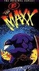

The Maxx
List contains: 7 items, 0.1 hours.
Seasons: 1 |
Seasons: 1 |

Stephen Klancher: February 3, 2009 
Weird but interesting. Looks like it was done by an artist rather than an animator, which has pros and cons. "Still talking out loud..."
Stephen Klancher: February 4, 2009
Trippy, though it the animation is throwing me off... Not bad, just unusual. I'm sure it would help if the copy was better quality.
Stephen Klancher: February 5, 2009
Fun episode, different than the first two...
"I started carrying a gun... that's what us writers call foreshadowing..."
"Nothing makes sense, and if it does, it's gotta stop."
"I started carrying a gun... that's what us writers call foreshadowing..."
"Nothing makes sense, and if it does, it's gotta stop."
Stephen Klancher: February 8, 2009
I really like the concept of an air whale. Makes me think of the falling whale in Hitchhiker's Guide.
Stephen Klancher: February 9, 2009
Half recap, half new. Getting near the end, too bad this series is so short.
"We sadistic psychopaths pride ourselves on keeping our word."
"We sadistic psychopaths pride ourselves on keeping our word."
Stephen Klancher: February 9, 2009
Weird, fun series. Good recommendation by Alex. The half with the little girl was creepy as hell.